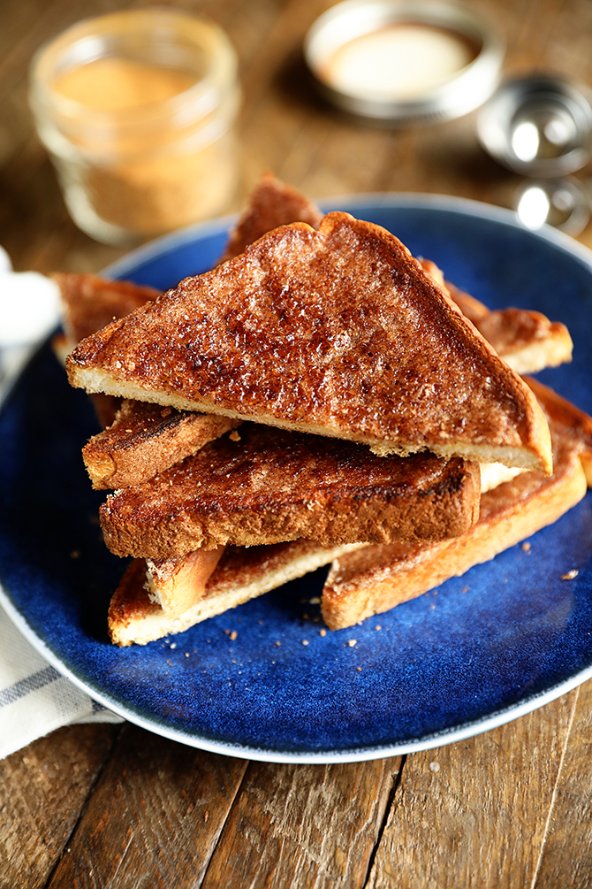

Cinnamon Toast Recipe

Description
To complete the morning with hot tea, here's the simple cinnamon toast recipe, make sure to use lots of butter!
Ingredients
- 2 slices white bread
- 2 teaspoons of butter (or more!)
- 2 tablespoons of white sugar
- 1 teaspoon of true cinnamon
Steps
- Use a toaster to toast the bread to desired darkness.
- Spread butter onto each side of each bread slice.
- In a cup or small bowl, stir together the sugar and cinnamon; sprinkle generously over hot buttered toast.